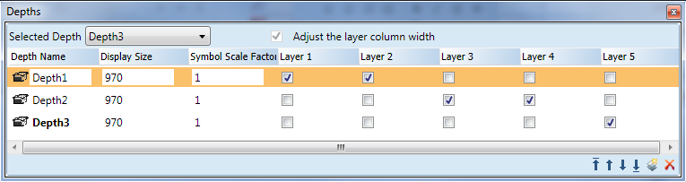

Depths View

The Depths view allows you create, rename, and delete a depth, re-order multiple depths, and to change the display size and Symbol scale factor properties of a depth. You can view a list of depths associated with the active canvas and move them up or down to order them.
The width of the Depths overview view columns can be adjusted manually.
Depths View | |
Field | Description |
Selected Depth | Displays the selected depth and its associated layers on the canvas. Use the drop-down arrow to select from a list of available depths. When you select a depth, the current factor is adjusted according to the display size of the selected depth. Additionally, only the layers associated with this depth will be displayed. |
Depth Name | When checked, the Depths Overview expands the layer columns to display all available layers. To return to the default Depths view, uncheck the box. This is unchecked by default. |
Display Size | The display size of the active depth. The default value in this column is taken from the display size of the main view at its current zoom factor when creating a depth. This value can be manually changed by clicking on the current value and entering the desired display factor. The current zoom factor in the Graphics Editor will then automatically be adjusted according to the display size value. |
Symbol Scale Factor | Display size of symbol. The default value in this column is set to the display size\graphic size. This value can be manually changed by clicking on the current value and entering the desired value as a ratio. |
Layer ...[value] | The available layers and their property descriptions for each depth. When checked, the associated layer appears with that depth. If unchecked, the layer does not appear with that depth. To remove the associations, deselect the layer box for each layer. The boxes are unchecked by default. All checked layers are visible in the Element view; unchecked layers are not. If you add a new layer, it will automatically be checked to display under in the active depth. |
| Depth Order Arrows -- Allows you to change a depths position in the depth order. You can move a depth to the top of the list, up a level at a time, down a level at a time, and to the bottom. |
| Insert New Depth -- Allows you to insert a new depth. |
| Delete Depths -- Allows you delete the selected depth. |